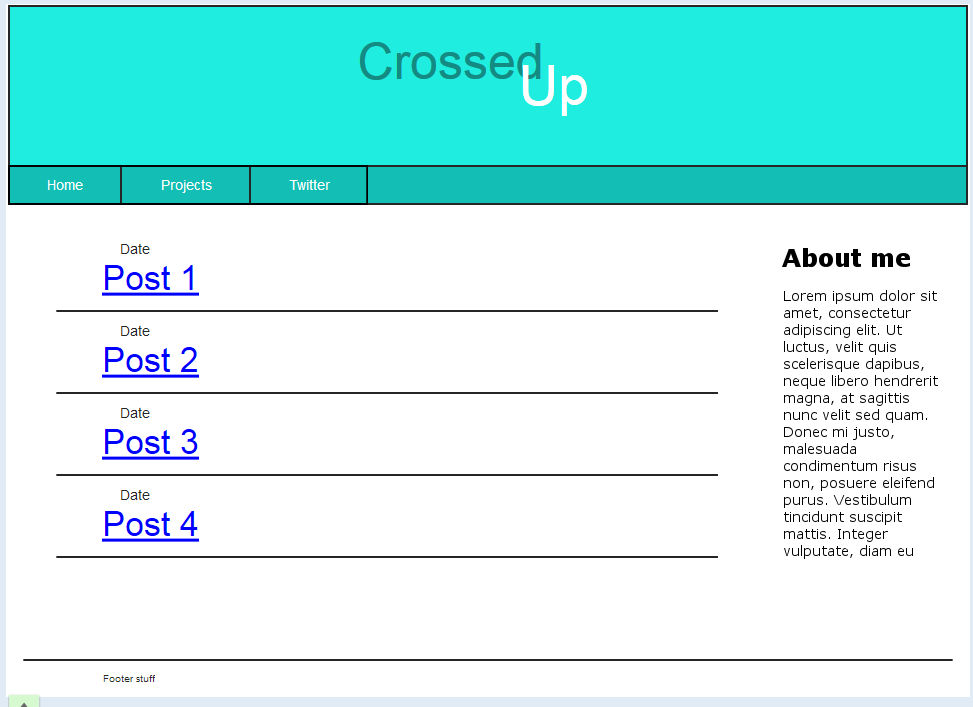

On Wireframing CrossedUp
Sunday, July 20th 2014
Initial plan and design
This being the blog of an aspiring dev, it's safe to assume that most people that would be potentially be interested are either other devs or at the very least what is considered "power users". That makes the target audience pretty small, but it means I can more or less safely ignore older browsers (specifically older versions of IE). From my limited experience with dev blogs, they tend to be either very fancy or very simple, but always usuable. Given my current technical skill, I'm going with the latter approach, which suits me fine. Keep the site clean and easy to read, that's the main focus.
